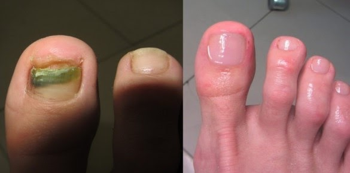

A gomba, amely tönkretette az életemet: hogyan vesztettem el a feleségemet és az egészségemet, majd hogyan tudtam kimászni ebből! Megosztom veletek is!
Sziasztok, a nevem Sanyi, és lehet, hogy a történetem hallatán elborzadtok, de egy átlagos lábgomba miatt majdnem elvesztettem az életem. Hogyan lehetséges ez? - kérdezitek ti. Sosem gondoltam volna, hogy egy ilyen apróság tönkreteheti az ember életet.
Az egész azzal kezdődött, hogy kis megvastagodott részek jelentek meg a körmeimen. Eleinte nem szenteltem ennek túl nagy figyelmet, de az idő múlásával az érintett terület növekedni kezdett, elkezdett viszketni, bőrpír jelent meg a lábamon. Aztán elmentem orvoshoz, és kiderül, hogy onychomycosis om van, vagyis egyszerűbben szólva, gomba.
Nem tudom, hol kaphattam el. Talán az uszodában, esetleg egy sportklub zuhanyzójában vagy bárhol máshol. Ahol magas a páratartalom és sok ember van, a gomba biztosan ott lesz.
Egyébként tudtátok, hogy az emberek 80% -a gombás spórát hordoz a bőrén. Lehet, hogy észre sem veszi, de amint az immunitása legyengül, például egy megfázáskor, a gomba azonnal támad, és még milyen erővel!

A gomba az egészség legnagyobb ellensége!
Sokan alábecsülik a gombás fertőzéseket, de az orvos elmagyarázta nekem, hogy ez a betegség nemcsak hogy fertőző, de nagyon veszélyes is. Az onychomycosis előrehaladott stádiumában a köröm körüli lágy szövetek gyulladásához vezethet, amely gyakran felnyitást igényel, néha az ujj vagy akár több ujj amputációjáig is fajulhat a dolog! És ha a fertőzés a repedéseken keresztül bejut a vérbe, az vérmérgezést és a láb amputációját eredményezheti!
Elismerem, hogy megijedtem, és rájöttem, hogy az állapotom igenis veszélyes. A külső megnyilvánulások semmik voltak ahhoz képest, amit a gomba valójában okozhat.

Az orvos sok gyógyszert írt fel nekem, de ezek nem voltak olcsók, ezért csak egy kenőcsre korlátoztam a dolgot, és ez nagy hiba volt. Ez a gyógymód nem segített rajtam, éppen ellenkezőleg, a viszketés még erősebbé vált, kellemetlen szag jelent meg, a talpamon lévő bőr megvastagodott és megrepedt, a körmöm besárgult és szörnyen kezdett kinézni.
Ha ilyen tüneteket tapasztaltok, kérlek titeket, ne késlekedjetek, azonnal kezdjétek el a kezelést, amíg súlyos szövődményekhez nem vezet a dolog!
Hogyan tette tönkre a gomba az életemet
Természetesen ez a helyzet nagyon kellemetlenné vált. Éjszaka nem tudtam aludni, szó sem volt arról, hogy a feleségem közelében lehessek, bosszantotta a lábam kellemetlen szaga, arra kért, hogy aludjak a nappaliban a kanapén.
Folyamatosan dühös voltam, viszketett a lábam, és a legdrágább gyógyszerek sem segítettek rajtam. Még népi módszereket is kipróbáltam, mindenféle leveleket raktam a lábamra és lábfürdőket készítettem. De semmi eredménye nem volt.
A feleségemmel vitatkozni kezdtünk, többé nem aludtunk együtt, a kapcsolatunk megromlott. Elkezdtem inni, hogy csillapítsam a viszketést és a megrepedt sarkam okozta fájdalmat. Néha a kétségbeesésem olyan erős volt, hogy már nem akartam élni ...
Úgy döntöttem, hogy egy másik orvoshoz fordulok, egy drágább klinikára megyek. Ott azonnal felajánlották a köröm eltávolítását, és más eljárásokat is előírtak. Egy vagyonba került!
Az eljárás, őszintén szólva, nem volt túl kellemes. Nem tanácsolom a gyenge idegzetű embereknek, de ez vár az emberre, ha elhanyagolja a betegséget!

A sebek nehezen gyógyultak. A körömágyam is fájt. Reméltem, hogy a gomba végre elmúlik, és először jobban éreztem magam, de 2 hónap elteltével erős fájdalmat éreztem, gennyezni kezdett és erős szagot árasztott magából a lábam.
Amikor felment a lázam, akkor már tudtam, hogy ez komoly, szörnyen éreztem magam, úgy éreztem, hogy meghalok.
Ismét orvoshoz fordultam, és kiderült, hogy gyulladás alakult ki. Kaptam egy antibiotikumot, alig másztam ki ebből, és már azt hittem, hogy végre vége.
A feleségemmel végül összevesztünk, és úgy döntöttünk, hogy külön költözünk. Meg is értettem őt, rossz volt neki mellettem, látni a szörnyű lábamat és elviselni azt az undorító szagot. Egyedül maradtam a problémámmal. Az orvosoktól pedig már féltem. Nem írtak elő semmilyen hatékony kezelést, csak egyre rosszabb lett a helyzet.
Aztán tettem az egészre, abbahagytam az orvos által előírt kenőcsök használatát, és hamarosan minden visszatért a megszokott kerékvágásba. A körmöm sárga és vastag lett, a repedések újra megjelentek és vérezni kezdtek, a szag még erősebbé vált. Egy ideig nem csináltam semmit, csak néztem, ahogy ez a rohadt gomba tönkreteszi az életemet és az egészségemet.

Kétségbe voltam esve, nem hittem abban, hogy bármi is segíthet, és képes leszek újra úgy élni, ahogy korábban éltem. Nem értékeltem az életemet, és hanyag voltam az egészségemet illetően, amit keservesen megbántam!
Egy régi barátommal való laza beszélgetés mentett meg, akivel váratlanul találkoztam az utcán. Sok éve nem láttuk egymást, és hétvégére meghívott a vidéki házába. Örömmel elmentem, már hónapok óta nem beszéltem senkivel, és egy boldogtalan és zárkózott ember lett belőle, aki visszahúzódó életmódot folytatott.
A barátom felajánlotta, hogy menjek vele szaunázni, de udvariasan visszautasítottam. Nem tudtam kifogásokat és mentegetőzést kitalálni, egyszerűen csak bevallottam a problémámat. Elmondtam, hogyan kínoztak, hogyan hagyott el a feleségem a gomba miatt és hogyan vált egy pokollá az életem.
Meglepő, de ahelyett, hogy megsajnált volna, azt mondta, hogy várjak egy kicsit, és felment a hálószobájába. Néhány perccel később egy tubus krém tért vissza.
- - Itt van, tessék - mondta. Csak ez öli meg a gombát, semmi más nem fog segíteni
Ez a krém volt. A barátom elmondta, hogyan ő is korábban próbált megszabadulni a gombától, kipróbált sok olyan gyógyszert, amely csak tönkretette az egészségét, májátültetésen esett át. És csak ez a krém segített neki. Európában keveset tudnak erről a krém, de az USA-ban és Kanadában a köröm- és lábgomba leghatékonyabb gyógymódjaként ismerik.

- elmulasztja az összes ismert és veszélyes típusú gombás fertőzést;;
- enyhíti a viszketést, a fájdalmat és az irritációt;
- 100%-ban fertőtlenít;
- megakadályozza a gomba terjedését;
- helyreállítja a fertőzés által károsított sejteket;
- megszünteti a baktériumok által okozott kellemetlen szagokat;
- a bőrnek biztosítja a szükséges hidratálást, nem keletkeznek rajta repedések.
De eleinte nem voltam biztos abban, hogy ez a krém segít, már nagyot csalódtam a gyógyszerekben és az orvosokban, rengeteg pénzt költöttem a kezelésekre, de a barbár körömeltávolítási eljárásokon és a haszontalan gyógyszereken kívül semmi sem segített, semmilyen segítséget nem kaptam.
Azonban nem volt vesztenivalóm, és úgy döntöttem, hogy megfogadom a barátom tanácsát, fogtam a tubus krém, és naponta kétszer elkezdtem kenni a lábam bőrére, és a körmökbe dörzsöltem.
Már 20 perccel a használat után kellemes érzést lehetett észrevenni: a viszketés elmúlt, a krém lehűtötte a bőrömet, végül fellélegezhettem, és egy kellemes estét tölthettem el filmnézéssel.
Reggel észrevettem, hogy a bőröm puhább tapintású, a repedések pedig kisebbek lettek. Nagyon meglepődtem és elégedett is voltam egyszerre. Tovább használtam a szert. De a krém kevés volt, ezért az interneten a hivatalos oldalon, ahol a -ot árulják, azonnal több csomaggal is rendeltem egyszerre, mivel akció volt és az ára nagyon kedvező volt.
2 hónapig használtam, és ezalatt az idő alatt a lábam teljesen megváltozott! A talpamon a bőr puha lett, a körmök normálisak lettek, teljesen megfeledkeztem a viszketésrõl és az égésrõl! Csak úgy repültem! Olyan könnyedség telítette el a lábam, hihetetlen érzés! Aludni kezdtem, az ingerültség eltűnt, a jó kedvem visszatért! Végre újra teljes életet éltem.

Hívhatok vendégeket, vagy én is elmehetek vendégségbe, habozás nélkül, anélkül, hogy a lábam szaga miatt aggódnék. Még nőkkel is találkoztam! És észrevettem, hogy a lábam már nem izzad! Ez csodálatos volt, mert a gomba nedves környezetben csak tovább szaporodik.
Rendkívül hálás vagyok barátomnak, hogy mesélt a krém, és szó szerint megmentette az életem!
Ez a krém valóságos üdvösséggé vált számomra! Nem könnyű elmondanom a történetemet, úgy tűnik, újra élem ezen szörnyű pillanatokat. De nagyon boldog leszek, ha a tapasztalatom hasznos lesz valakinek és legalább egy egészséges emberrel több lesz!
Részletes információ erről a csodálatos gyógymódról a krém hivatalos honlapján található. Ott meg is rendelheti a legalacsonyabb áron! Siessen, amíg az akció érvényes!
Hozzászólások:
Nagyon sajnálom, Sanyi, szomorú történet. Kár, hogy történt veled. De örülök neked, hogy most minden rendben van, nagy ember vagy!
Ugyanezzel a problémával szembesültem, a körmöm sárgulásával kezdődött minden. A gomba nagyon gyorsan átterjedt a másik lábamra. A kinézete undorító volt. Nem mentem orvoshoz, úgy döntöttem, hogy magam kezelem. Már több módszert is kipróbáltam, de semmi sem segített. Aztán az egyik fórumon megismertem a ot. Nagyon dicsérték, és én is a linken rendeltem meg. A krém nagyon hatékonynak bizonyult, Sikerült meggyógyulnom, és még csak nem is költöttem sokat!
A férjem is ezzel beteg. Sokféle dolgot kipróbáltunk már. Nem tudtam, hogyan segítsek neki. Nagyon fájt neki, a körme tönkre ment, berepedezett, nagyon viszketett a bőre. Nem tudott aludni. Erős allergiája volt a gyógyszerekre. így a krém a természetes összetevőivel kiutat jelentett számunkra. A szomszédunk javasolt nekünk egy orvost. Más orvosok valamilyen oknál fogva nem beszéltek róla. Lehet, hogy csak pénzzel akartak lehúzni minket? Most a férjem állapota sokkal jobb, és továbbra is használjuk a krém.
Igen! A készítmény tényleg nagyon jó, nekem csak ez segített, pedig sok dolgot kipróbáltam. Ez egy igazán kitűnő gombaellenes szer! A lányomnak is segített a a gombájával!
Ez nagyon ijesztő, el sem tudom képzelni, hogy lehet lehúzni a körmöt. Nem szabad elhanyagolni a betegségét, és sokan nem veszik észre a probléma összetettségét. Nekem is volt gombám, de csak kezdeti stádium, és azonnal meg is rendeltem a krém a linken.
A gombát a zuhany alatt kaptam el. Szörnyű állapot: a lábad állandóan viszket, a körmöd csúnya lesz, az önértékelésed pedig megsínyli ezt és a személyes életet is el lehet felejteni. Sokáig próbáltam drága gyógyszerekkel megszabadulni a gombától, de mindig visszatért. Aztán megismertem a krém, és végül képes voltam megszabadulni tőle. 
Soha nem gondoltam volna, hogy a gomba ilyen következményekhez vezethet! Tényleg alábecsüljük veszélyét!
Sok éven át mycosisban szenvedtem. Az orvosok különböző gyógyszereket írtak fel, de nem múlt el teljesen. A gomba folyamatosan visszatért. Köszönöm az ajánlását, mindenképpen kipróbálom a krém.
Én gyógyszerekkel tettem tönkre az egészségemet. Mind nagyon mérgezőek voltak, és ez nagy csapás a májnak. De képes voltam megbirkózni a gombával, amiért sok köszönet a nak és a szeretett nővéremnek, aki egy tévéműsorból értesült róla, és mesélt nekem róla.
Nagybátyámnak levágták a lábujjait. Először gombával indult, majd bakteriális fertőzés is hozzájött, a lábujjai megfeketedtek és le kellett vágni.
Micsoda borzalom! Emberek, figyeljetek az egészségetekre, cselekedjetek időben!
Nagyszerű srác vagy, amiért ilyen nyíltan beszélsz erről, azt hiszem, ez sok embernek segít!
Köszönöm az ajánlást, már meg is rendeltem a ot. Több éve szenvedek, és semmi sem segít. Egy csomó pénzt kidobtam az ablakon…
Az apám is ebben a csúnya betegségben szenvedett. Viszketés, égető érzés és bűz. Csak a segített. Gyorsan rendbe tette az apámat, és most már tudjuk, hogyan lehet megszabadulni ettől a nyavalyától, ajánljuk a barátainknak is. Mindenképpen próbáljátok ki, ez biztosan segít!
Nekem a kezemen volt, kezeltem is ezzel a krém, és gyorsan elmúlt. De annyira nem volt elhanyagolt az én esetemben.
Csatlakozom a pozitív véleményekhez! Én is megszabadultam a segítségével a gombától. Alig egy hónap kellett hozzá. Nagyon fontos, hogy természetes az összetétele, mert a gyógyszerek nagyon egészségkárosítóak.